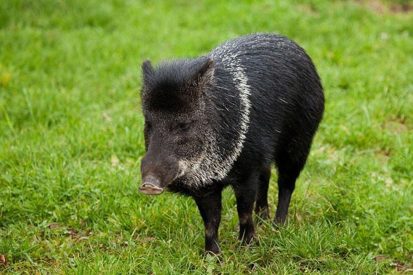
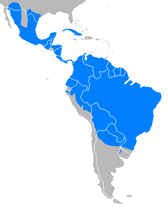

Cateto
Nome científico:(Pecari tajacu Linnaeus, 1758)
Nome comum: Cateto, porco-do-mato, caititu.
Classificação biológica:
Domínio: Eukaryota.
Reino: Animalia.
Filo: Chordata.
Classe: Mammalia.
Ordem: Artiodactyla.
Família: Tayassuidae.
Gênero: Pecari.
Espécie: Pecari tajacu.
Nutrição: Onívoro.
Hábitos alimentares: Alimenta-se de frutas, raízes, tubérculos, pequenos animais e insetos. É um animal oportunista, adaptando sua dieta ao que está disponível no ambiente.
Morfologia do corpo: Possui corpo robusto, com pelagem cinza-escura ou marrom. Mede entre 75 e 100 cm de comprimento e pesa entre 14 e 30 kg. Possui presas curtas e afiadas, usadas para defesa e escavação.
Comportamento: Vive em grupos de 5 a 15 indivíduos, liderados por um macho dominante. É um animal territorial e pode se tornar agressivo quando ameaçado.
Principais Presas: Frutas, raízes, tubérculos, pequenos animais e insetos.
Principais Predadores: Onças-pintadas, jaguatiricas e grandes cobras, como a sucuri.
Locais habitados
Distribuição: Presente em todos os biomas brasileiros.
Habitat: Habita florestas tropicais, savanas e áreas de vegetação densa. Prefere locais próximos a fontes de água.
Reprodução: A reprodução ocorre durante o ano todo, com gestação de aproximadamente 145 dias. A fêmea dá à luz de 1 a 3 filhotes, que são amamentados por cerca de 6 a 8 semanas.